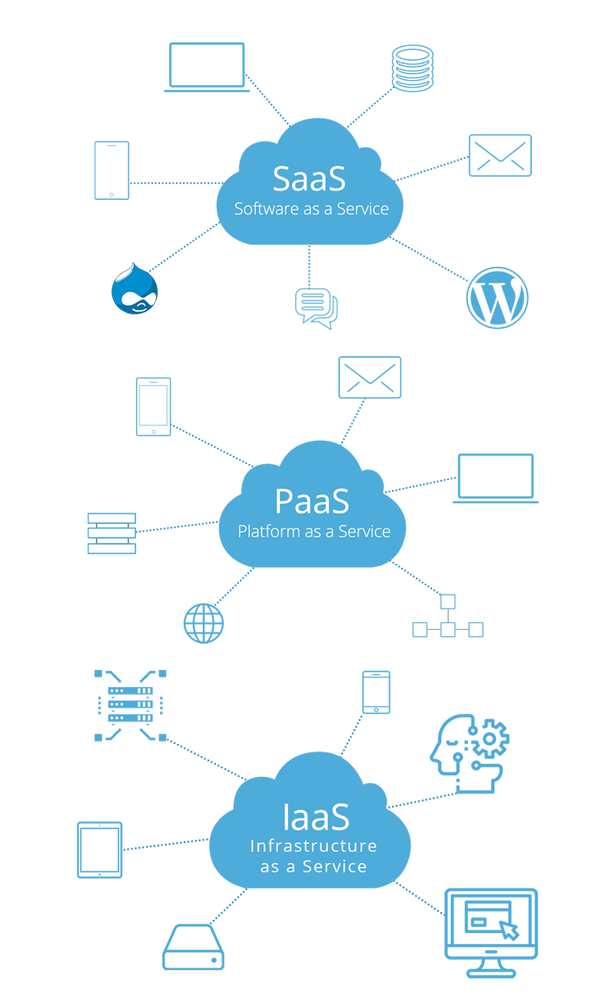

What’s a Public Cloud?
Public Clouds are computer services offered by external suppliers through the
public via the
Internet. Features vary by provider, but can include storage resources, applications or virtual
machines. The public cloud allows scalability and resource sharing that would not otherwise be
possible for a single organization. They can be free or sold on demand, which allows customers to
pay only for the use of CPU cycles, storage or bandwidth they consume.
Unlike private clouds, public clouds can help companies avoid the high costs of implementing
according to the need, management and maintenance of hardware and application infrastructure on
site. The cloud service provider is responsible for managing and maintaining the entire system.
Public clouds can also be deployed more quickly than on-site infrastructure. All employees of a
company can use the same application in any office with the device of their choice, as long as they
can access the Internet.
Public Cloud Security
Choosing for a public cloud means that you are hiring a third-party provider to provide a set of
services over the Internet. Now, contrary to what it seems, a public cloud does not lack great
security precautions. Over the years, public cloud providers have adapted and improved their
security measures, allowing them to manage attacks that have only grown in terms of
sophistication.
Modern providers of public cloud services take security very seriously. Suppliers employ
specialized security staff to automate security functions and monitor the system for anomalies.
Strict policies protect user data from being accessed by other tenants in the cloud.
That said, there are limitations to the level of security available. For example, companies that
handle sensitive data may not be able to meet all aspects of compliance needed with a public
cloud. Use cases that benefit from employing a public cloud strategy are those that feature
software applications as a service, along with vendor-assisted security, those that require
additional capacity at a constant rate, where crowds of people access applications and testing
and development will be required.
How is public cloud structured?
A public cloud allows users to share resources while maintaining the privacy of
each user's
data. Its architecture is virtual, this provides an environment in which shared resources are
used as needed.
In a public cloud service, you can access a service or application on any device connected to
the Internet. The device itself performs little or no resources, so individuals can use highly
complex applications almost anywhere.
The public cloud is generally designed with internal redundancies, precisely to avoid data loss.
A service provider can store duplicate files in several data centers, and this contributes to
ensuring data integrity. So storing data in a public cloud can be considered safe for most
hazards.

Its structure can be diversified, depending on the type of service. The main most common
models
on the market today:
SaaS
Software as a service is a cloud model in which a provider distributes software hosted in
the
cloud. Users access the application via the internet. This model eliminates the need for
individual users to install software on their personal machines. This reduces the
organization's
hardware needs and reduces support and maintenance costs.
PaaS
Platform as a service is a computing model that allows an organization to develop software
without having to maintain the underlying infrastructure. Essentially, a provider creates
and
supports an optimized environment that it offers users through a broadband connection. PaaS
generally includes version control and build services, as well as computing and storage
resources.
IaaS
Infrastructure as a service is a model in which an organization outsources its entire data
center to a cloud service provider. The provider hosts everything from storage servers to
network hardware and maintains virtualization of the environment. IaaS simplifies cloud
adoption. The system is generally more economical than buying and maintaining hardware on
site.
Advantages and challenges
Public Clouds allow companies to scale in huge proportions, which would not be
feasible in a structure with local servers. As the company grows, it does not need to purchase
additional hardware or expand its computing structure. Likewise, cloud-based services and
applications require less hardware than applications delivered in the traditional way. In other
words, users no longer have to worry about installing and updating apps on their own devices.
Instead, cloud applications will always remain up to date.
Financially, a public cloud strategy offers organizations a way to grow at scale without
accruing substantial costs. Vendors like Amazon Web Services, Google Cloud Platform and
Microsoft Azure offer usage agreements that allow organizations to pay only for the resources
they use. As an operational cost, public cloud services can protect an organization's budget
from high initial capital investments.